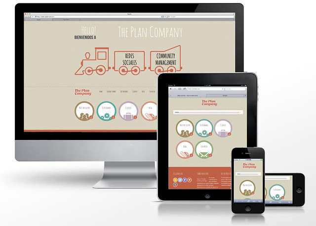
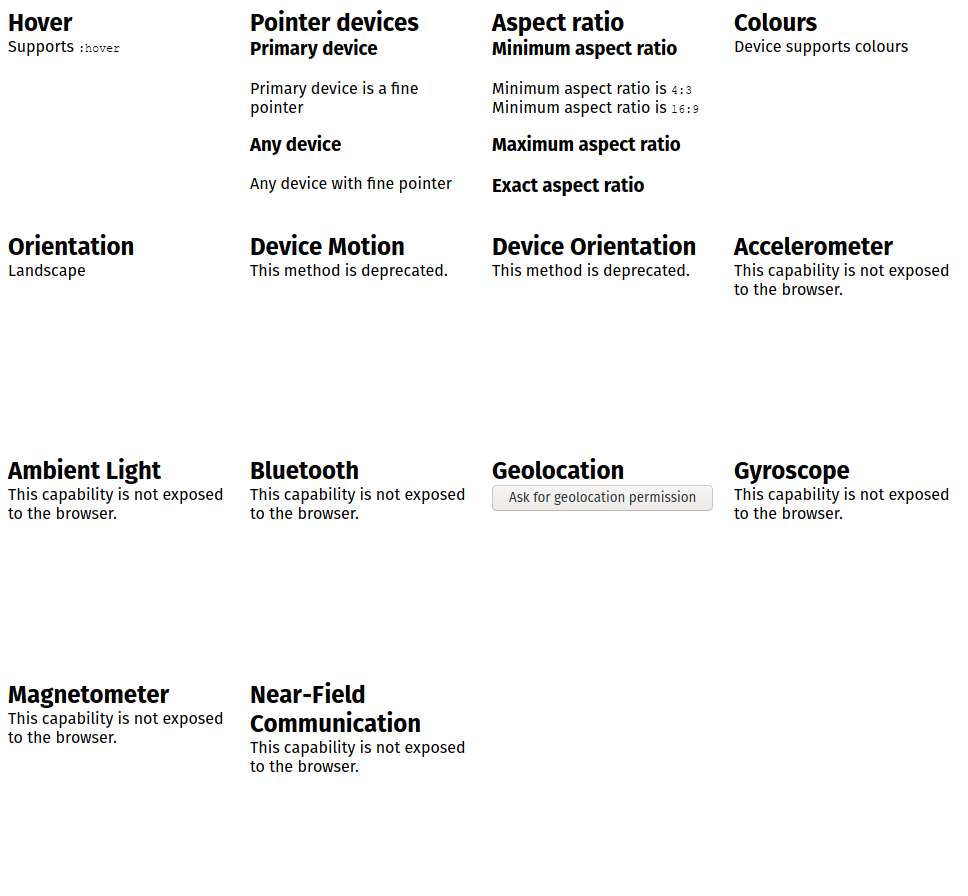
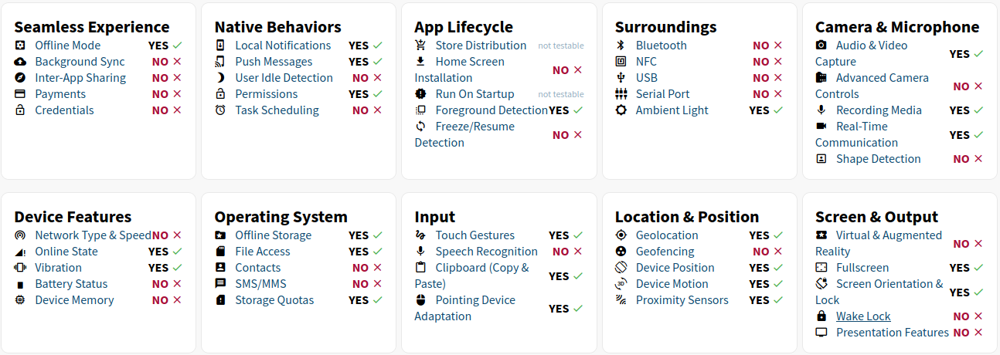

Designing with sensor data
FOSDEM 2021
by André Jaenisch on 6th February 2021

jaenis.ch/hobbies/speaking/fosdem2021-javascript-device-sensors/
Designing with sensor data
by
André Jaenisch
is licensed under
 Attribution 4.0 International
Attribution 4.0 International
Responsive Web Design
Demo!
Detectar

What Can Web Do Today?

Demo!
Ambient Light Sensor
Demo!
Bluetooth
Demo!
Voice Recognition
Project Fugu
Picture credits
Flickr: The Plan Company by Alvaro Rubio ( CC BY-NC-ND )
Flickr: 89 Morpheus by Felton Davis ( CC BY )
Flickr: Samsung Galaxy Note 3 by Kārlis Dambrāns ( CC BY )
GameDev.js Jam theme - taken from the announcement post
Flickr: Code World by David ( CC BY-NC-ND )
Flickr: Fugu by williamnyk ( CC BY-NC )
Flickr: Week 15 - Magic Hour by Morgan ( CC BY )
Questions?
Thanks for listening!